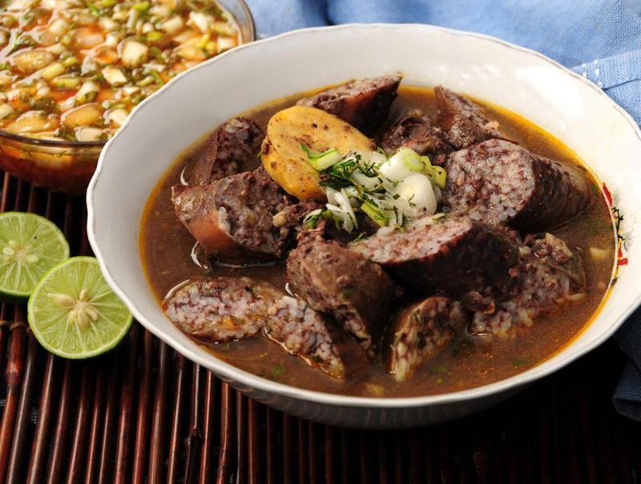

Home
Caldo de Salchicha

Description
This is a traditional dish from Ecuador. Known as Caldo de Salchicha. It might not have the best presentation but it is the most desired dish in Ecuador.
Ingredients
- 1 pork tripe
- 2 cups of pig's blood
- 3 cups of uncooked rice
- 1/2 small cabbage, cooked and chopped into small slices
- 1 red onion
- 1 pepper
- 3 lemons
- Garlic, Salt and cumin
- 1 teaspoon of oregano
- 1 teaspoon of cilantro
- 1 tablespoon of mint
- 5 green platains
- 5 tablespoons of annatto
Preparation
- Wash the pig's intestines well with plenty of water and salt, then rub them with green peels and let them soak in lemon, mint and water for 20 minutes.
- Cook the rice in 4 cups of water for 10 minutes; this way it will be soupy but not overcooked. Let it cool and mix it with the cooked cabbage and the blood.
- Separately, prepare a sofrito: heat the annatto and fry the onion, bell pepper, garlic, salt, cumin, oregano, cilantro, and mint. Then, combine it with the rice. Stuff the casings with this mixture.
- Grate 2 green plantains and mix them with some sofrito, annatto, cilantro and lard, and fill some tripe with this.
- In 5 liters of water, place the pork offal, sliced green platains, and raw cabbage; season with salt, garlic, and cumin. Cook for one hour, or until the offal is cooked. Then, carefully place the stuffed casings in the pot, being careful not to tear them, and cook for another 45 minutes, or until the casings stop bleeding.
- Serve the hot broth in a deep bowl, with lemon and chili pepper.